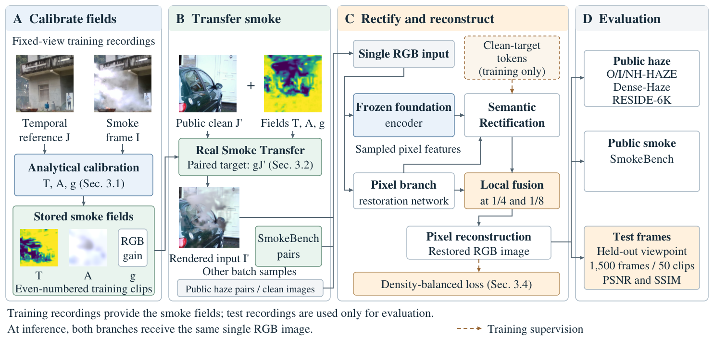
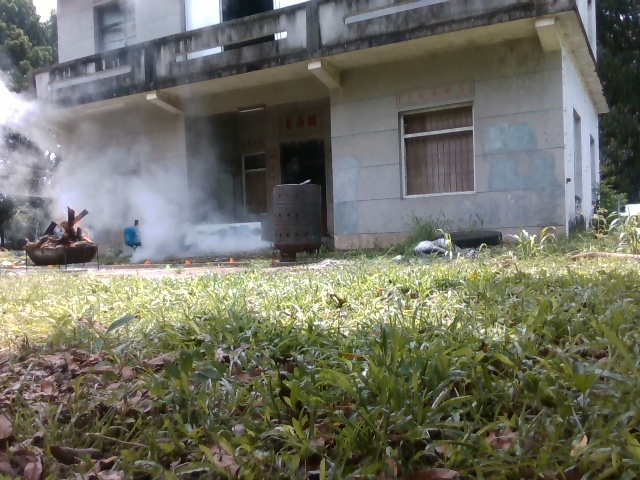
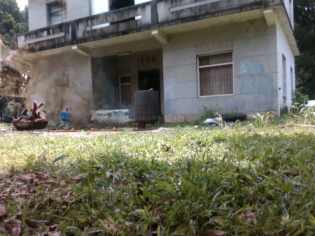
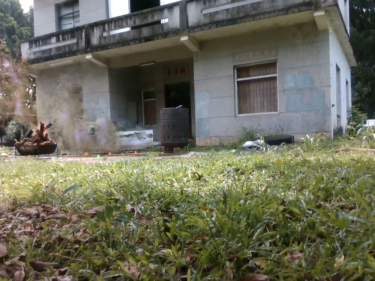
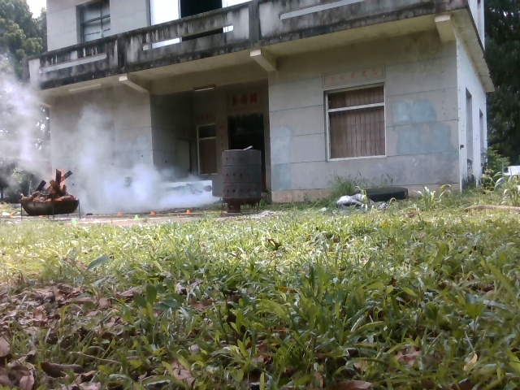
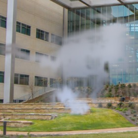
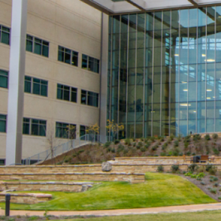

FireDesmoke: Fire Smoke Removal via Real Smoke Transfer and Semantic Rectification
Abstract
Fire smoke removal must restore dense and medium smoke regions while preserving clear scene content. FireDesmoke combines Real Smoke Transfer, which calibrates smoke fields from real-fire recordings and transfers their spatial layout onto clean images, with Semantic Rectification, which uses local pixel features to rectify smoke-corrupted tokens from a frozen DINOv3 ViT-L/16 encoder. An AdaIR pixel branch reconstructs the image with these rectified features. On 1,500 test frames from a held-out viewpoint, the complete model improves dense- and medium-smoke PSNR by 3.73 and 2.63 dB over the input while preserving clear regions (+0.41 dB). With matched training budgets, replacing transferred pairs with SmokeBench pairs lowers dense-smoke PSNR by 0.74 dB; removing Semantic Rectification leaves clear-region PSNR 1.31 dB below the input. A separate model trained only on SmokeBench achieves 30.47 dB Y-PSNR under the official evaluation protocol. The complete model is also evaluated on RealX3D and five public haze benchmarks.
Method
FireDesmoke combines Real Smoke Transfer with Semantic Rectification. Training recordings provide smoke fields for training; inference takes a single RGB image.

Method details
Overview of FireDesmoke. Calibrated transmission T, spatial airlight A and exposure gain g are transferred to public clean scenes. Sampled pixel features guide Semantic Rectification; rectified DINOv3 features from blocks 6, 12, 18 and 24 fuse locally with the AdaIR pixel branch. Clean-target features supervise rectification during training.
Real fire smoke
Reducing smoke. Preserving scene detail.

Input
FireDesmokeMove over either image to inspect the same detail.
Qualitative results
Fire smoke and public smoke benchmarks.


INPUTFireDesmokeEvaluation details
View the evaluation reference
Take the smoke somewhere else.
Measured in one scene. Rendered in another.


CLEAN TARGETMEASURED SMOKERendering details
Illustrative field transfer, not restoration. The procedural control keeps the exact T histogram and exposure. See the controlled experiment ↗
Code and data
RealFireSmoke contains de-identified test images, evaluation references and masks, and calibrated training smoke fields. See the data page for access information.
Example selection & scientific provenance
The sequence viewer shows selected excerpts with sampled playback. SmokeBench film scenes and saved comparisons use FireDesmoke* with 320-pixel windows; other restoration examples use the complete FireDesmoke model with 384-pixel windows. Both use overlap blending and horizontal-flip averaging. The fire comparisons are curated excerpts selected by visual inspection to illustrate restoration strengths, rather than an aggregate method ranking. HazeFlow, GenDeg (NAFNet) and MB-TaylorFormerV2-B (OTS) provide representative comparisons with the same source frames and crop coordinates. Fire gallery examples span visually light, moderate and dense smoke, selected from a systematic contact sheet without ranking by test scores. These display labels do not replace the paper’s pixel-level evaluation strata. The wider gallery retains source-order examples across scenes, including imperfect outputs. All restored images come from fixed checkpoints; the website applies no exposure, contrast or sharpening adjustment. Field-transfer images are explicitly labelled explanatory renders. Quantitative claims follow the manuscript, rather than measurements of these selected examples.